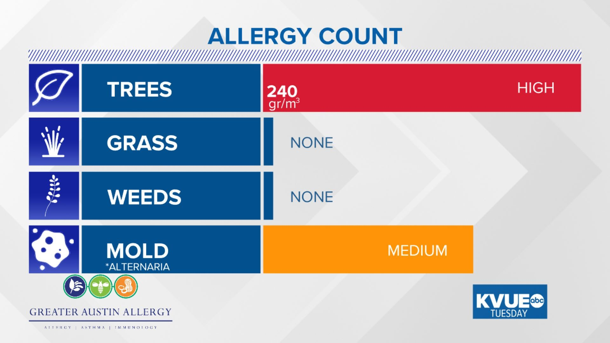

Weather Forecast
Today's High:
87° | Today's Low:
59°
AUSTIN (KXAN) — A few isolated overnight downpours courtesy of a convergence boundary behind yesterday’s cold front cleared south of our area just before sunrise this morning.
Northeast winds today bring in low humidity and sunny skies, but high temperatures will still be warm in the middle to upper 80s. We are expecting another nice day Thursday with a few afternoon clouds.
Our next cold front arrives during the day on Friday, and may again fail to produce much in the way of measurable rainfall.
Mother’s Day weekend looks mild and pleasant overall pleasant, with mainly cloudy skies Saturday then warmer sunshine on Sunday.
Though we do not have any severe weather threats in our foreseeable future, the month of May has a history of bringing dangerous storms, flooding and tornadoes. Stay with the First Warning Weather team through storm season.
Allergy Forecast
